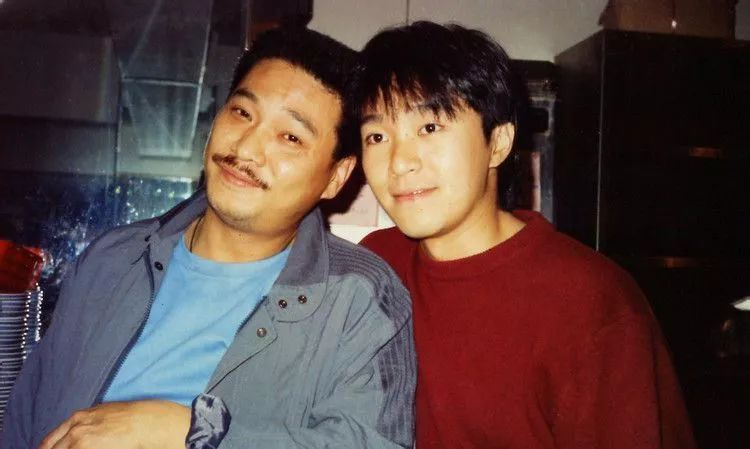

吴孟达
个人简介
吴孟达（英语：Ng Man Tat，1952年1月2日－2021年2月27日），香港演员，生于福建厦门，行内及民间尊称达叔，达哥，五岁移居香港，1974年毕业于无线电视艺员训练班第3期。代表作大多是粤语香港电影，以《天若有情》拿下1991年香港电影金像奖最佳男配角。与周星驰合作的多部无厘头喜剧，以2001年《少林足球》闻名。
早年生活
吴孟达1952年生于福建厦门，母语为闽南语。五岁随父母及胞姊移居香港，另有两名胞弟（二弟利达、三弟鸿达）。那年1957年正值逃港潮。父亲在西环南北行工作。早年在香港岛南区香港仔鱼类批发市场的板间房生活，后移居政府廉租屋。曾就读香港仔工业学校，在学期间修读机械课程，以学习一技之长帮补家计。
入行经过
吴孟达有一次留意到无线电视播出的剧集《民间传奇》剧集，剧中一位演出者是其工厂同事、1972年第1期无线电视艺员训练班毕业生林伟图。因自觉可以像对方一样有条件成为艺人，于是在1973年投考了第3期无线电视艺员训练班，同期考入者还有周润发、卢海鹏和名导演林岭东，以第五名的成绩毕业。1974年即已开始在无线电视参与演出，参演无数但几乎都是配角。他最早的演出乃《民间传奇》系列；直至1979年凭着演出《楚留香传奇》的“胡铁花”一角，才开始受到注意。
人物形象
- 
主要作品
电影
| 年份 | 片名 | 角色 |
|---|---|---|
| 1981年 | 执法者 | 麦基 |
| 1984年 | 停不了的爱 | 波哥 |
| 1985年 | 疯狂游戏 | 老板-莫铎 |
| 1986年 | 魔翡翠 | |
| 1987年 | 龙在江湖 | 典狱 |
| 1988年 | 特警屠龙 | 警察德叔 |
| 1989年 | 赌神 | 花柳成 |
| 1990年 | 赌圣 | 三叔（黑仔达 |
| 1991年 | 赢钱专家 | 三叔 |
| 1992年 | 死官 | 广东知县何汝大 |
| 1993年 | 济公 | 伏虎罗汉 |
| 1994年 | 破坏之王 | 鬼仔达 |
| 1995年 | 百变星君 | 厕所达 |
| 1996年 | 食神 | 大快乐饮食集团老板 |
| 1997年 | 喜气逼人 | 小花主人 |
| 1998年 | 古惑仔情义篇之洪兴十三妹 | 吹水达 |
| 1999年 | 喜剧之王 | 阿毛 |
| 2000年 | 真味小和尚 | 东叔 |
| 2001年 | 少林足球 | 明锋 |
| 2003年 | 野蛮小子 | 赖大荣 |
| 2008年 | 功夫灌篮 | 吴师傅 |
| 2011年 | 蔡李佛拳 | 陈皮 |
| 2013年 | 疯狗是个传说 | 刘大师 |
| 2014年 | 香港仔 | 郑东 |
| 十万伙急 | 朱月坡 | |
| 2016年 | 导火新闻线 | 谭锐智 |
| 2017年 | 毒诫 | 保叔 |
| 2018年 | 新乌龙院之笑闹江湖 | 长眉大师 |
| 2019年 | 流浪地球 | 韩子昂 |
| 一品爵爷 | 十二贝勒爷 | |
| 万妖国 | 国王 | |
| 2020年 | 真假美猴王之大圣无双 | 地藏老人 |
| 2021年 | 长安伏妖 | 马三 |
| 少林寺之得宝传奇 | 客商老者 |
电视剧
| 年份 | 剧名 | 角色 |
|---|---|---|
| 1975年 | 狮子山下之深渊 | 胜仔 |
| 1997年 | 京都神探 | 张迷糊 |
| 2000年 | 新梁山伯祝英台 | 丁程雍 |
| 绝色双娇 | 秦中玉 | |
| 2001年 | 小宝与康熙（TVB、港台合拍） | 海大富 |
| 新楚留香（台湾） | 司摘星 | |
| 九岁县太爷 | 陈青云 | |
| 2002年 | 沧海游龙 | 高尚 |
| 2003年 | 绝色双娇续集皇后进宫 | 秦中玉 |
| 醉拳 | 聂三阳 | |
| 妙手神捕俏佳人 | 金必多（游云） | |
| 2004年 | 少年大钦差 | 乾隆帝、陈青云 |
| 边城小子（台湾） | 一点红 | |
| 2005年 | 功夫状元 | 苏保 |
| 肥姐挂帅 | 路青云 | |
| 2006年 | 白色巨塔（台湾） | 唐国泰 |
| 2007年 | 大约在冬季 | 顾小凡之父-顾文轩 |
| 恋爱兵法（中韩合拍） | 金正浩 | |
| 厨缘 | 梁世宽 | |
| 2010年 | 新安家族 | 许善夔 |
| 欢喜婆婆俏媳妇 | 铁木尔 | |
| 流氓校长（台湾） | 江上 | |
| 2011年 | 大捕房 | 包打听 |
| 船来船往 | 鲍鱼佬 | |
| 2012年 | 屌丝男士2 | 客串 |
| 2013年 | 辣妈俏爸 | 金桂祥 |
| 我家有个赵大咪 | 李广财 | |
| 2014年 | 冲天炮 | |
| 鲜花盛开的村庄 | ||
| 十月围城 | 区肇新 | |
| 布袋和尚新传 | 张重天 | |
| 2015年 | 神医传奇 | 葛根 |
| 2016年 | 有仓出租 | 达叔 |
| 2017年 | 反黑 | 猪油 |
| 2018年 | 新万家灯火 | 严标准 |
患病和逝世
- 2014年，吴孟达曾因病毒感染而导致的心脏衰竭被送入深切治疗部留医，更曾数度传出乌龙死讯。
- 2020年，早前因被拍到面色苍白而令健康状况惹起揣测的吴孟达，再被传媒拍到在超市购物的画面，只见吴孟达虽然身形比以往清减不少，但仍健步如飞，健康状况不俗。
- 2021年2月传出罹患肝癌，2月27日下午5时许，吴孟达因肝癌引发多重器官衰竭，在一众亲友陪同下于沙田大围仁安医院去世，享寿69岁。吴孟达影圈好友田启文证实死讯，并表示将代表组织治丧委员会以不举办追思会。而翡翠台早已于一星期前安排在2月27日晚上8时30分重播电影《审死官》，而当晚重播该电影前则因应吴孟达死讯公布后，播放《无可比拟的演艺泰斗 永远怀念吴孟达》悼念画面。
- 2月28日晚上9时30分，无线电视在翡翠台安排一小时直播特备节目《无可比拟的演艺泰斗 永远怀念吴孟达》，出席嘉宾包括吴孟达生前好友吴丽珠、邓英敏、商天娥、戴志伟、关礼杰等；并安排于3月1日起晚上11时55分剧集时段改为重播《他来自江湖》，并该剧重播前播放《无可比拟的演艺泰斗 永远怀念吴孟达》悼念画面。